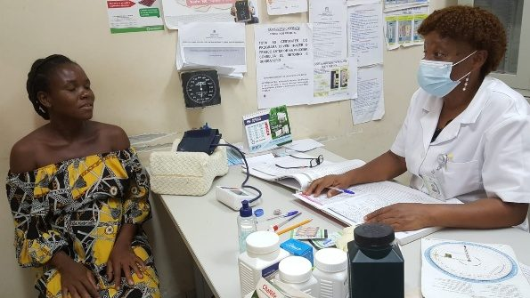
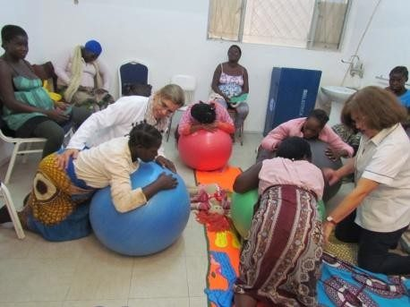

Actualiser et renforcer la performance de première ligne en santé maternelle et infantile, aligné sur les Baby-Friendly Standards (version 2018/2020) et les Modèles Mondiaux de Soins de Sage-Femme.
Malgré d'innombrables efforts, programmes et innovations en santé maternelle et infantile, la mortalité maternelle et néonatale due à des causes évitables reste élevée dans le monde entier — souvent liée à un accès inégal aux services de santé, à une faible adhésion aux consultations prénatales et à l'écart entre ce que les services de santé offrent et ce dont les femmes et les adolescentes ont besoin.
Les Baby-Friendly Standards (2018/2020) comblent ces lacunes dans l'accompagnement des femmes enceintes, pendant le travail et l'accouchement, dans la période post-partum immédiate, et dans les soins aux jeunes enfants de la naissance à deux ans et au-delà — en adoptant une approche centrée sur la personne, respectueuse et fondée sur la relation, qui soutient les processus physiologiques et réserve les interventions aux besoins cliniques.
Le programme de mentorat est entièrement gratuit et n'interfère pas avec vos fonctions dans l'établissement de santé.
Guidé par Regina Pereira da Silva et Vanessa Barroso, qui apportent ensemble des décennies d'expertise internationale en santé maternelle et infantile.
Un certificat gratuit est délivré à l'issue des 15 mois, couvrant 16 compétences réparties sur 7 domaines.
Un questionnaire confidentiel qui vous aide à comprendre le point de départ de votre établissement de santé. Le remplir est recommandé, mais pas obligatoire pour rejoindre le programme.
Des ressources actualisées et une formation en ligne, module par module, selon la version 2020 du Baby-Friendly.
Programme de mentorat, un parcours de pratique transformatrice.
Il est recommandé que jusqu'à trois professionnels de première ligne du même établissement de santé — travaillant auprès des femmes enceintes, pendant le travail et l'accouchement, et en post-partum immédiat — rejoignent le programme ensemble.




Photos : UNICEF.